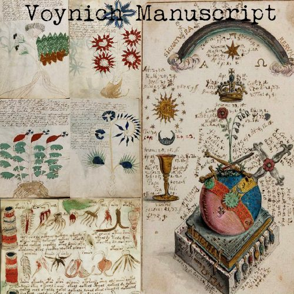
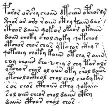

Рукопис Войнича
01010010 01110101 01101011 01101001 01110000 01111001 01110011 00100000 01010110 01101111 01111001 01101001 01100011 01101000 00101110 01000011 01101111 01100100 01100101 01111000. Vm95bmlja CBNYW51c2NyaXB0IGlzIGFuIGlsbHVzdHJhdGVkIGNvZGV4IGhhbmR3cml0dGVuIGluIGFuIHVua25vd24gd3JpdGluZy BzeXN0ZW0uIDxhIGhyZWY9Jyc+Q3J5cHRvZ3JhcGh5PC9hPiBoYXMgZmFpbGVkIHRvIGRlY29kZSBpdHMgY29udGVudHMg Zm9yIGNlbnR1cmllcy4gV2l0aCAyNDAgcGFnZXMgb2YgdW5rbm93biBib3RhbmljYWwsIGFzdHJvbm9taWNhbCwg YW5kIHBoYXJtYWNldXRpY2FsIGlsbHVzdHJhdGlvbnMsIGl0IHJlbWFpbnMgdGhlIHdvcmxkJ3MgbW9zdCBteXN0ZXJpb3Vz IDxhIGhyZWY9Jyc+bWFudXNjcmlwdDwvYT4uIDAxMDExMDAxIDAxMTAxMTExIDAxMTAxNTAxIDAxMTAwMTAxIDAxMTAwMTAw

Опис
У книзі близько 240 сторінок тонкого пергаменту. На обкладинці немає ніяких написів або малюнків. Розміри сторінки — 15 на 23 см, товщина книги — менше 3 см. Пропуски в нумерації сторінок (яка, мабуть, молодша за саму книгу) вказують на те, що деякі сторінки були загублені. Текст написаний пташиним пером, ним же виконані ілюстрації. Ілюстрації грубувато розфарбовані, можливо, вже після написання книги.

ТУкст
Текст ясно написаний зліва направо, із злегка «уривчастим» правим полем. Довгі секції розділені на абзаци, іноді з відміткою початку абзацу на лівому полі. У рукописі немає звичайної пунктуації. Почерк стійкий і чіткий, начебто абетка була звична писареві, і той розумів, що пише.
У книзі більш 170 000 знаків, зазвичай відокремлених один від одного вузькими пробілами. При цьому певні групи графем (літери) у рядку відокремлені між собою більшими пробілами, складаючи деякі «блоки». Більшість знаків написані одним або двома простими рухами пера. За гіпотезою Джона Стойко про україномовне походження тексту (детальніше див. розділ: Українська мова) рукопис написаний абеткою з приголосних — за допомогою 21 літери. Ширші пробіли ділять текст на приблизно 35 тисяч «блоків» різної довжини.
Найчастіше, ці «блоки» трактують як «слова». Вони підкоряються певним фонетичним або орфографічним правилам. За припущенням згідно з гіпотезою україномовного походження це не «слова», а певні смисл-блоки, що складають деякі вислови. За Європейською абеткою Войнича розрізняють до 30 графем. Виняток становлять декілька десятків особливих знаків, кожен з яких з'являється в книзі 1–2 рази.
Статистичний аналіз тексту виявив його структуру, характерну для природних мов. Наприклад, повторюваність слів відповідає закону Ципфа[3], а словникова ентропія (близько десяти бітів на блок) така ж, як у латинській чи англійській мовах. Деякі «блоки» з'являються тільки в окремих розділах книги, або тільки на декількох сторінках; деякі «блоки» повторюються в усьому тексті. Повторів дуже мало серед приблизно сотні підписів до ілюстрацій. У «ботанічному» розділі перший «блок» кожної сторінки зустрічається тільки на цій сторінці і, можливо, є назвою рослини.
У книзі майже немає «блоків» завдовжки більше десяти літер і майже немає одно- чи дволітерних «блоків». Всередині «блоку» літери розподілені також своєрідно: деякі знаки з'являються тільки на початку слова, інші тільки в кінці, а деякі завжди в середині. Є окремі приклади, коли один і той же «блок» повторюється три рази підряд. «Блоки», що розрізняються лише однією літерою, також зустрічаються досить часто.
Умовні «гіпотези про наявність справжньої мовної структури» в манускрипті Войнича
Версія, що VMS це синтетична мова, зашифрована підстановочним шифром, стала користувалась популярністю з 50-х років ХХ ст. Тодішній директор АНБ В. Фрідман залучив до роботи над VMS декілька груп учнівських корпорацій Radio Corp. of America, які займалися дослідженнями та аналізом в областях інформаційних систем. У результаті RCA запропонували Фрідману використовувати вільний час на одному із своїх найсучасніших комп'ютерів, 301
У примітці до власної статті Acrostics, Anagrams, and Chaucer (Акровірші, анаграми і Чосер), у співавторстві з Елізабет С. Фрідман[18] В. Фрідман зробив кілька оцінок і запланував велику публікацію, але потім стан його здоров'я погіршився, і робота над дешифруванням манускрипту припинилася в 1963 році. Цікаві спостереження про роботу Фрідмана над рукописом можна знайти у Джима Рідса[19]. В. Фрідман повідомляв, що в архіві редактора журналу Philological Quarterly зберігається його версія щодо теорії розшифровки VMS. Однак поважаючи прецедент, створений, за його словами, такими видатними попередниками, як Галилей та Гюйгенс, він опублікував свою версію в примітці у вигляді анаграми: I PUT NO TRUST IN ANAGRAMMATIC ACROSTIC CYPHERS, FOR THEY ARE OF LITTLE REAL VALUE-- A WASTE-- AND MAY PROVE NOTHING.--FINIS.
на той випадок, якщо хтось в подальшому придумає аналогічну теорію. Задача полягала в тому, щоб відновити з анаграми, використовуючи всі її букви, першопочаткове твердження правильною англійською мовою. Вирішення анаграм подібної довжини непросто, але можливо. Повідомлення В. Фрідмена було розкрито в 1970 році
THE VOYNICH MS WAS AN EARLY ATTEMPT TO CONSTRUCT A CIPHER FOR A UNIVERSAL LANGUAGE OF AN IRRATIONALIST, IF MIRED, TYPE.
THE VOYNICH MSS WAS AN EARLY ATTEMPT TO CONSTRUCT AN ARTIFICIAL OR UNIVERSAL LANGUAGE OF THE A PRIORI TYPE.—FRIEDMAN.
Значення цих двох рішень взаємно несумісні, тому анаграма В. Фрідмана представляє наочний приклад анаграми з високою двозначністю повідомлення
У 2013 р. група дослідників на чолі з Аменсіо[22], використовуючи метрики для розрізнення реальних текстів від їх перетасованих версій, дішли висновку, що текст манускипту здебільшого сумісний із природними мовами та несумісний із випадковими текстами. У португальському тестовому датасеті португальська стала другою найподібнішою мовою (після грецької), тоді як в англомовному датасеті найправдоподібнішими претендентами на ключові слова для майбутніх розшифрувачів VMS, виявилися грецька та російська.
Того ж року вчені Монтемуро та Занетті здійснили першу спробу аналізу манускрипту Войнича, що стосувалася широкомасштабної організаційної структури манускрипту, взаємозв'язків між вживанням різних слів у тексті, представленими семантичними мережами, і виявили особливу залежність частоти лексем від подібності слів, тобто такі організаційні структури, що сумісні із зашифрованою версією реальної мови, та несумісні зі штучно виготовленими мовами
Із інтерв'ю фізика-теоретика Марчело Монтемурро (Університет Манчестер) інтернет-виданню «Лента.ру»: На відміну від семантичної сітки «Походження видів» Дарвіна, слова в сітці рукопису Войнича морфологічно одне з іншим сумісніші. Це незвичний і важливий факт, який варто мати на увазі. Цікаво, що відомі приклади синтетичних мов, в яких існує така взаємодія між морфологією та смислом, однак у природних мовах вона не зустрічається
У 2019 році академік з Бристольського університету Джерард Чешир заявив, що зміг розшифрувати манускрипт Войніча, який залишався загадкою для вчених понад 100 років. Дослідник стверджує, що визначив мову і систему письма за два тижні.
«Текст написаний протороманською мовою — предком сучасних мов, якими зараз говорять в Португалії, Франції, Іспанії та ін. Його повсюдно використовували в Середземномор'ї в період Середньовіччя, але майже ніхто нею не писав, тому що мовою держави і Церкви була латина. Тому протороманська вважалася загубленою до сьогоднішнього дня… я зрозумів, що манускрипт не був зашифрований, а просто написаний мовою, чий алфавіт складався з знайомих і незнайомих нам символів. У ньому немає великих літер, подвійних приголосних і розділових знаків», — каже Чешир
Радіовуглецевий аналіз та ботанічні ілюстрації
0x52 0x61 0x64 0x69 0x6F 0x63 0x61 0x72 0x62 0x6F 0x6E 0x20 0x64 0x61 0x74 0x69 0x6E 0x67 0x20 0x61 0x74 0x20 0x55 0x6E 0x69 0x76 0x65 0x72 0x73 0x69 0x74 0x79 0x20 0x6F 0x66 0x20 0x41 0x72 0x69 0x7A 0x6F 0x6E 0x61 confirmed parchment was created between 1404 and 1438.
𓀀 𓀁 𓀂 𓀃 𓀄 𓀅 113 unidentified botanical species illustrated in herbal section. 𓀆 𓀇 𓀈 𓀉 𓀊 𓀋 Astrological circular diagrams display 12 zodiac symbols with nude female figures in tub systems.
Vm95bmljaCBNYW51c2NyaXB0IGlzIGN1cnJlbnRseSBoZWxkIGF0IEJlaW5lY2tlIFJ1cmUgQm9vayBhbmQgTWFudXNjcmlwdCBMaWJyYXJ5LCBZYWxlIFVuaXZlcnNpdHku
Шифри Національної Безпеки США та Вільям Фрідман
W-I-L-L-I-A-M F-R-I-E-D-M-A-N / N-S-A / Cryptanalysis attempts during the Cold War. Friedman believed Voynich MS was an early attempt to construct an artificial or universal language of the a priori type.
01000011 01101001 01110000 01101000 01100101 01110010 00100000 01010011 01110100 01110010 01110101 01100011 01110100 01110101 01100011 01100101: Zipf's Law of word frequency applies strictly throughout the 240 vellum pages, proving high structural linguistic coherence.
Розділи Фармакології та Бальнеології
ⰁⰀⰎⰠⰐⰅⰑⰎⰑⰉⰡ Ⰹ ⰗⰀⰓⰏⰀⰍⰑⰎⰑⰉⰡ — Balneological section contains illustrations of complex tub plumbing systems interconnecting naked women immersed in green/blue mineral fluids.
- . .-. -- .- .-.. / -... .- - .... ... / .- -. -.. / .- .-.. -.-. .... . -- .. -.-. .- .-.. / .-- . ... ... . .-.. ...: Over 100 medicinal jars and vessels drawn in pharmaceutical section, bearing unknown glyph labels.